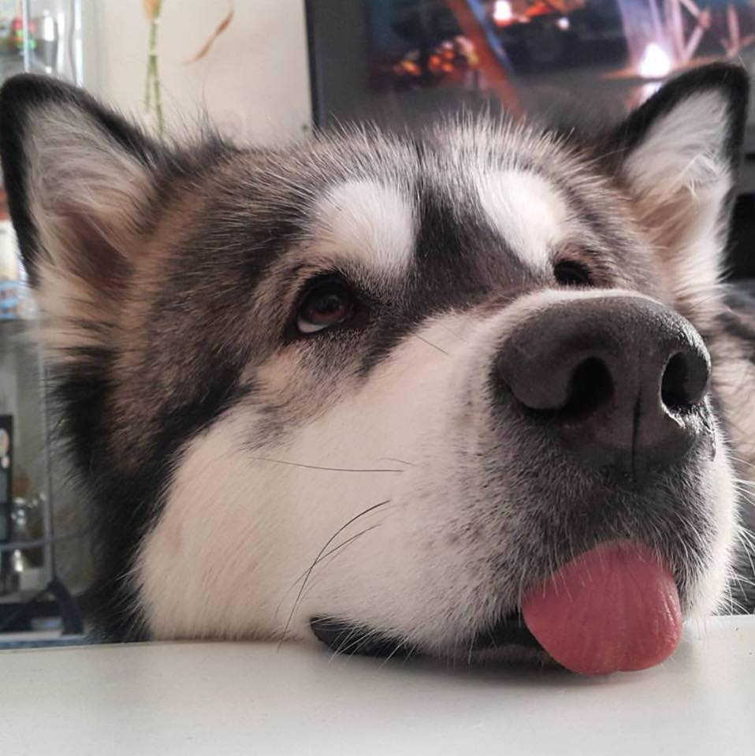

CUỘC ĐỜI THI SĨ BUMIDU UPS & DOWNS
Vào một buổi chiều đẹp trời ngày 21 tháng 7 năm 1999, một thiên thần đã giáng trần ở bệnh viện Từ Dũ. Thiên thần đó là ai thì không ai biết, nhưng mà cùng thời điểm Thi sĩ Bumidu cũng chính thức có mặt trên đời, một nhân vật trong tương lai làm mưa làm gió giới Faker toàn thế giới khi liên tục fake her way to so many things. Thật ra cũng không có gì là lạ khi Bumidu càng lớn càng thông minh, xinh đẹp như vậy, khi mà khi mang thai mẹ cô đã liên tục ăn trứng ngỗng, uống sữa ngoại (tuy nhiên khi mang thai Ti Bui em cô thì mẹ cô sợ mập nên không ăn uống nữa). Bumidu có một tuổi thơ khá dữ dội. Thật ra cũng có lý tại các superheroes đầu phim thường tè le trái me.
Thi sĩ Bumidu cũng tuổi thơ dữ dội
Tuy nhiên sau 10 tuổi thì tài năng của thi sĩ dần được bộc lộ. Thi sĩ liên tiếp được vào học giỏi nhất nước Xamxie. Ở đây cô đã gặp rất nhiều những con người tài năng và thú vị. Đồng thời cô cũng được tiếp cận với nghệ thuật. Hơn hết khi lên 12 cô còn phát hiện ra mình biết phép thuật. Không lâu sau khi lên cấp 3 thi sĩ đã bắt đầu viết thơ. Tuy nhiên lúc bấy giờ thơ của cô còn gặp nhiều ý kiến trái chiều do xã hội vẫn chưa hiểu được những tác phẩm của cô.
Bumidu was struggling to gain recognition
Một vài tác phẩm của Thi sĩ Bumidu
Ven Bùi Nhùi - Tác phẩm mới nhất của Thi si Hôm nay không phải sinh nhật cô Ven Cũng không phải muốn được cô khen Tao viết bài thơ này muốn nói Ven có cái đầu sáng chói Nhưng không phải do bị hói Dù lâu lâu dữ dằn hơi xì ke Nhưng nếu cho ăn bánh thì tao không care.
Harry trái bi - Tác phẩm đoạt giải nhất cuộc thi Giveaway của NXB Trẻ Harry ha ha con ba ba 🐢 ăn trái cà, 🍅 con lạc đà 🐪 ăn trái na 🍏 Ronnie hô hô con Bê Tô 🐶 ăn trái ngô 🌽, gánh lô tô 🎲 chơi ca rô ❌⭕️ Hermie hi hi con kiki🐩 chơi bắn bi 🏐, con gà 🐣 si nấu cà ri 🍲 Dumbledore he he con be be 🐮 đang ăn tre 🎋, trái me me 🍍 chua le le 😖 Severus hu hu con lulu 🐕 đáng hát ru, pikachu 🐱 bu cái lu 🗑